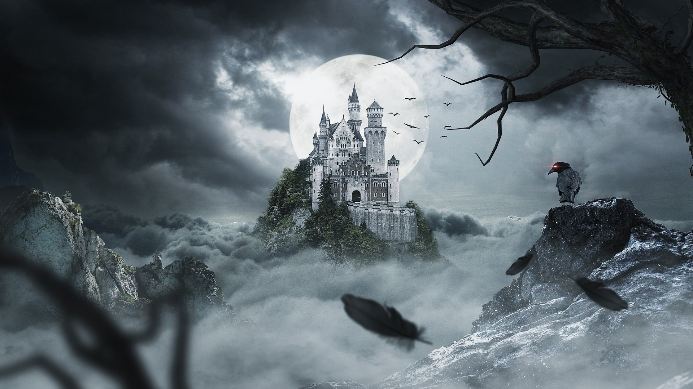
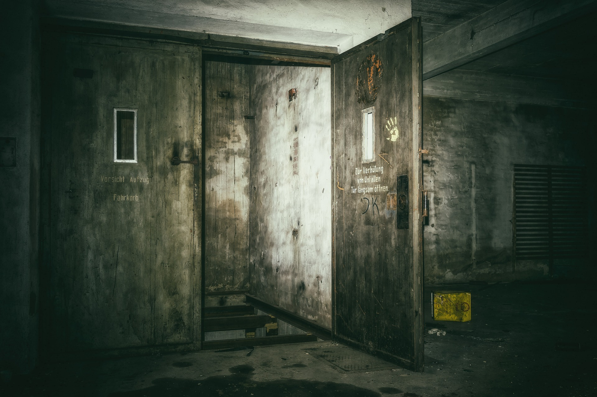
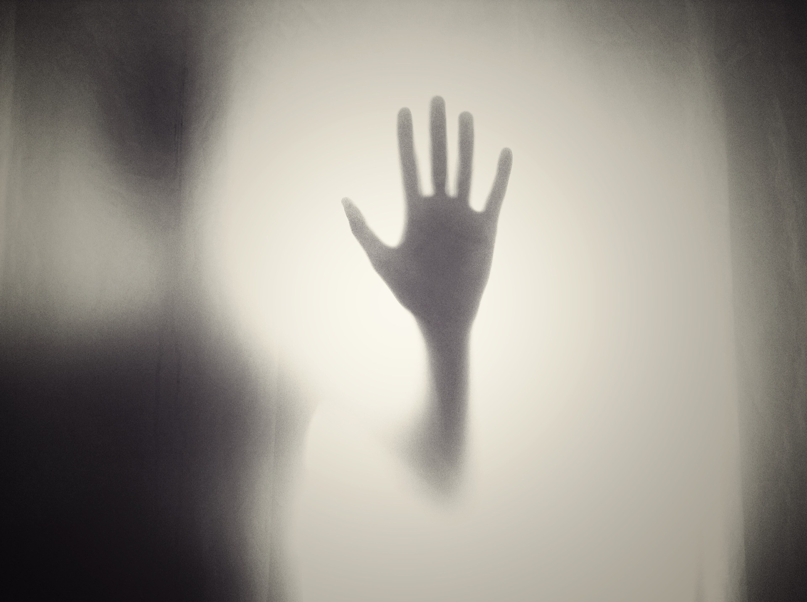

Scariest Horror movies
- Saw
- The ring
- The conjuring
- Insidiuos
- Paranormal Activity
- Scream
- Amityville
- Annabelle
- The Grudge
- The exorcist
- Texas Chainsaw Massacre
- Friday the 13th
- A Nightmare on Elm Street
- Poltergeist

Scary
This is the scary page, here you can learn about the most popular, scariest horror movies, look at some of the creepiest pictures, and read some famous true ghost stories
At the top of the screen is a navigation bar, this will take you to the pages we think users might be interested in. There is different genres on each page, pick the one or few you like!
Enjoy and have Fun.
  The curse of the poltergeist set
Poltergeist is one of the most beloved horror movies in American history. It's also rumored to be cursed. Many of its stars and cast members have met with unfortunate accidents after filming, and some have even died.
In total 5 people from the cast of the movie had died, in strange circumstances, while 4 other cast memebers also experience strange circumstances of events and surived
There are many rumours of what could have brought on the curse of the poltergeist cast, one of the main reasons being is that they used real skeletons when filming
The cast and crew were not fully aware of this they presumed the skeltons would have been fake and made of plastic.
Fake skeletons were too expensive to be made,so the set used real skeleton, this was the sure cause of the curse
Months after the release of the film the first cast memeber died.
Dominique Dunne (who played Dana, the older sister of the Freeling family) was the first of the cast to die in an untimely fashion. Dunne broke up with an abusive boyfriend, who later returned to her house to pressure her into getting back together with him. She refused, and an argument ensued. As the argument escalated, the ex-boyfriend choked her until she passed out and ultimately fell into a coma.
Heather O'Rourke, who played Carol Anne in the film franchise, is one of the people most commonly said to be a victim of the Poltergeist curse. She'd been diagnosed with Crohn's disease earlier in life, but that turned out to be a misdiagnosis. In fact, O'Rourke had a bowel obstruction that caused septic shock. Unfortunately, the symptoms were misattributed to the flu and not immediately treated, and she died at just 12 years old as the obstruction released toxins into her bloodstream.
For future reference never use real skeletons on a movie set again, or you might start a new horror movie curse.